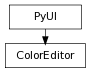

class counterpart of mel function colorEditor
The colorEditorcommand displays a modal dialog that may be used to specify colors in RGB or HSV. The default behaviour when no arguments are specified is to provide an initial color of black (rgb 0.0 0.0 0.0). The command will return the user’s color component values along with a boolean to indicate whether the dialog was dismissed by pressing the OKbutton. As an alternative to responding to the colorEditorcommand’s return string you can now query the -rgb/rgbValue, -hsv/hsvValue, and -r/resultflags to get the same information. The final argument is 1 if the dialog’s OKbutton was pressed, and 0 if the Cancelbutton was pressed.In query mode, return type is based on queried flag.
Three float values corresponding to the hue, saturation, and value color components, where the hue value ranges from 0.0 to 360.0 and the saturation and value components range from 0.0 to 1.0. Use this flag to specify the initial color of the Color Editor, or query this flag to determine the color set in the editor.
Derived from mel command maya.cmds.colorEditor
This query only flag returns true if the dialog’s OKbutton was pressed, false otherwise. If you query this flag immediately after showing the Color Editor then it will return the same value as the boolean value returned in the colorEditorcommand’s return string. Flag can have multiple arguments, passed either as a tuple or a list.
Derived from mel command maya.cmds.colorEditor
Three float values corresponding to the red, green, and blue color components, all of which range from 0.0 to 1.0. Use this flag to specify the initial color of the Color Editor, or query this flag to determine the color set in the editor.
Derived from mel command maya.cmds.colorEditor